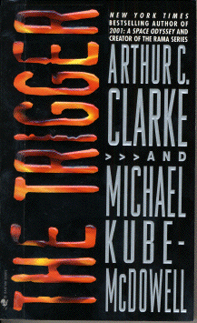

The Triggerby Arthur C. Clarke and Michael Kube-McDowell
publisher: Bantam Books
Fiction, 447 pages | 
(book cover art, Copyright ©1999 Arthur C. Clarke & Michael Kube-McDowell)
Used with Permission. |
Return to the Book MenuPrevious|Next
Description:
An accidental discovery in the physics lab leads to a new invention -- a machine that could render most modern weapons useless. While some believe that this device can lead to a safer world, others are convinced that it will trample on the Second Ammendment. How will the future be affected?
Recommended for: Recommended for: people interested in current events (including military affairs and gun laws) and the effects of technology on the way we live.
Did-you-read questions:
Deadline: February 1, 2005.
These should be easy questions, but you should have the questions ready and keep an eye out during your reading. Each question should be answered with 1-2 sentences.
Note: these questions are not probably not the most important part of the book! Your essay will not have to cover these questions!
- What is the common (sci-fi) name for the device that Baby was supposed to be?
- Who are the White Kings?
- What city do Lee and Horton visit to take a break?
- Who drives into Brohier's taxi?
To what semi-secret organization does Colonel Carol Harris belong?
Report Questions:Deadline: Peer Review Session on February 8, 2005; paper due February 10, 2005.
You should write a 3 - 4 page essay on one of the following questions. Your essay should include examples and references to the book, unless otherwise specified. Page number references are sufficient for citing material from the primary book. If you use outside materials, cite your sources in full. If you would rather write on a different topic, you may, but clear it with Mr. Howe or Ms. Sullivan first.
- Certainly, the most obvious question in this book is whether the Horton devices are a good idea. Do you think they are? Do you think they are constitutional? What do you think that could add to the debate? Be specific and site issues in the text.
- Do you think that the two sides in this debate are adequately and realistically represented? Use examples to support your case.
- Suppose you discovered the secret to a piece of technology that could change the world -- for better or for worse. How would you share that information? (Or would you try to suppress it?) Compare your plans with those of Horton and Brohier.
- At several points in this book, Horton undergoes significant changes in lifestyle. Which lifestyle do you think is his favorite? Does he wind up a happy person?
Graphic and Presentation:
Deadline: February 21 - March 3, 2005.You will give a 10 minute presentation on both of the following:
- Convince your peers that they should (or should not) read this book. (This may include a brief summary of the book.) Give examples of what was cool or worthwhile in the book, and what you got out of it (or didn't).
- Describe a (realistic) science idea that you learned about in this book, citing information from at least 2 external sources (other than the dictionary). If you would like help choosing or understanding an idea from your book, you are invited to come talk to Mr. Howe or Ms. Sullivan.
Note: This presentation should not be just a reading of your paper!Along with this presentation, you should have a graphic that will go with it. A Power Point presentation is recommended, but if you have a special idea for a something else, such as a model, an original video presentation, or a well done drawing/ painting/ sculpture/ etc., you may do so, provided it involves a similar level of effort and polish. Speak to Mr. Howe or Ms. Sullivan first if you are considering an alternate graphic format to the Power Point.
Return to the Book MenuPrevious|Next